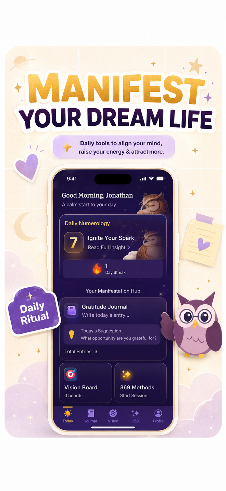

Manifestare non funziona? 7 motivi reali e i rimedi
Se manifestare non ti sta funzionando, la causa più probabile non è l'energia sbagliata: è un obiettivo troppo vago, una pratica che resta sogno a occhi aperti, o un piano che non diventa mai azione. I rimedi sono pratici: affila l'obiettivo, immagina l'ostacolo oltre al traguardo, e scrivi cosa farai e quando. Qui trovi sette motivi comuni per cui la pratica si blocca, uno sguardo onesto a cosa dice la ricerca e un reset di 7 giorni.
I sette colpevoli soliti: (1) l'obiettivo è vago, (2) immagini solo il traguardo, (3) manca un piano d'azione, (4) molli prima di un ciclo intero, (5) vuoi manifestare qualcosa fuori dalla tua influenza, (6) usi affermazioni a cui non credi, e (7) non registri niente, quindi i progressi non si vedono. Ognuno ha rimedio.
Manifest tiene la pratica sul telefono: una voce al giorno, una serie da non spezzare e i promemoria, così il giorno 4 non scivola via.
Scarica Manifest →Perché la mia manifestazione non funziona?
Perché le tecniche di manifestazione sono strumenti mentali, non garanzie, e quasi tutti i blocchi risalgono a come usi lo strumento. Le risposte che trovi in rete si appoggiano a spiegazioni come la «vibrazione bassa» o la «resistenza nascosta», che non si possono verificare. I motivi qui sotto invece si controllano sul tuo quaderno, e parecchi hanno ricerca alle spalle. Niente di tutto questo prova che desiderare causi i risultati; mostra quali abitudini ti rendono più probabile ottenere ciò che cerchi.
I 7 motivi, e il rimedio per ciascuno
| # | Motivo | Il segnale che lo stai facendo | Rimedio |
|---|---|---|---|
| 1 | Obiettivo vago | «Voglio più soldi / amore / successo» | Aggiungi un numero, una data e un dettaglio concreto |
| 2 | Immagini solo il successo | Visualizzare è bellissimo, non cambia niente | Aggiungi l'ostacolo e un piano se-allora |
| 3 | Nessun piano d'azione | Scrivi ogni giorno ma non hai un passo successivo | Scegli un'azione per questa settimana |
| 4 | Molli troppo presto | Cambi metodo ogni pochi giorni | Prima finisci un ciclo intero |
| 5 | Obiettivo fuori dalla tua influenza | Dipende interamente da un'altra persona | Punta al tuo comportamento e alle tue opzioni |
| 6 | Affermazioni incredibili | Fai una smorfia mentre scrivi la frase | Riscrivila in una versione credibile e precisa |
| 7 | Nessuna traccia | Non sai dire cosa è cambiato | Registra prove e azioni ogni giorno |
1. L'obiettivo è troppo vago
«Ho successo» non ti dà niente da misurare e niente da fare martedì. «Mando cinque proposte da freelance a settimana e chiudo un cliente entro dicembre» fa entrambe le cose. La precisione è anche il modo in cui saprai se qualcosa ha funzionato. Il metodo dello scripting te la impone chiedendo scena e dettaglio, e questi esempi di scripting mostrano la differenza tra frasi vaghe e frasi concrete.
2. Immagini solo il traguardo
È la trappola meglio documentata. Negli studi della psicologa Gabriele Oettingen, pubblicati nel 2002 con Doris Mayer sul Journal of Personality and Social Psychology, chi coltivava fantasie positive sul futuro, come trovare lavoro o perdere peso, tendeva a ottenere meno di chi aveva aspettative realistiche. Il suo lavoro successivo ha trovato che accostare al desiderio l'ostacolo, una tecnica che chiama contrasto mentale, migliora la costanza. Una versione semplice: scrivi il risultato che vuoi, poi scrivi la cosa che più probabilmente si metterà di mezzo.
3. Manca un piano d'azione
La ricerca di Peter Gollwitzer sulle intenzioni di implementazione, il formato «se succede X, allora faccio Y», è tra le più replicate della psicologia degli obiettivi. Una meta-analisi del 2006 di Gollwitzer e Paschal Sheeran su 94 studi ha trovato un effetto medio-grande sul raggiungimento degli obiettivi. Scrivere «se è giovedì alle 20, allora mando le email con le proposte» serve più che scrivere l'obiettivo per la trentatreesima volta.
4. Molli prima di un ciclo intero
Il metodo 369 dura 33 giorni, e il 55×5 ne dura 5. Giudicare un metodo dopo tre giorni è come giudicare un programma di allenamento dopo una seduta. Scegline uno e portalo a termine, poi fai un bilancio onesto.
5. L'obiettivo dipende da qualcun altro
«Mi riscrive» o «mi danno la promozione» poggia sulle decisioni di altre persone. Puoi comunque provarci, ma riformula l'obiettivo attorno a ciò che controlli: «chiedo io l'incontro», «mando il mio portfolio», «divento una persona con cui vorrei uscire». Desiderare puntando una persona precisa è anche la forma di manifestazione che finisce in delusione più spesso.
6. L'affermazione per te non è credibile
Se «sono milionario» ti fa storcere il naso, la tua attenzione va dritta alla contraddizione. Costruisci un ponte: «sto imparando a gestire i soldi, e oggi faccio un passo verso il mio obiettivo di risparmio». La nostra guida alle affermazioni per manifestare ha versioni credibili per soldi, amore e fiducia in sé.
7. Non stai registrando niente
Senza una traccia scritta, una settimana lenta sembra un fallimento e una settimana buona sembra fortuna. Una riga al giorno su cosa hai scritto, cosa hai fatto e cosa hai notato rende visibili i progressi, anche quando l'obiettivo grosso non è ancora arrivato. È il senso di un diario di manifestazione.
Un reset di 7 giorni
- Giorno 1: Scegli un obiettivo. Aggiungi un numero e una data.
- Giorno 2: Scrivi l'ostacolo principale in una frase.
- Giorno 3: Scrivi un piano se-allora per quell'ostacolo.
- Giorno 4: Fai la prima azione che il piano nomina.
- Giorno 5: Riscrivi la tua affermazione finché non è precisa e credibile.
- Giorno 6: Registra tre prove, per quanto piccole.
- Giorno 7: Fai il bilancio. Tieni, aggiusta o lascia andare l'obiettivo.
Come l'app Manifest aiuta nei punti in cui ci si blocca
L'app Manifest: Vision Board & 369 è costruita attorno alle abitudini qui sopra: i modelli per il 369 e il 55×5 così finisci un ciclo intero, un diario di gratitudine e scripting dove registri quello che hai fatto oltre a quello che hai desiderato, e una serie che mostra quanto sei stato costante. Non può garantire un risultato, e nessuna app può. Quello che fa è rendere più facile da mantenere la versione costante, precisa e tracciata della pratica. Abbinala a cosa dice la psicologia su se la manifestazione funziona per il quadro completo.

Domande frequenti
Quanto devo aspettare prima di concludere che manifestare non funziona?
Dai a un metodo un ciclo intero: 33 giorni per il metodo 369, 5 giorni per il 55x5, o quattro settimane di scripting quotidiano. Poi rivedi con onestà: l'obiettivo era preciso, avevi scritto un piano, hai fatto le azioni? Se la risposta è no, il metodo non l'hai ancora testato. L'hai solo abbandonato.
È colpa mia se la mia manifestazione non si avvera?
No. I risultati dipendono da molte cose fuori dal tuo controllo: le decisioni degli altri, i tempi, l'economia. Quello che puoi controllare è la chiarezza, il piano e l'azione, ed è lì che questa guida si concentra. Dare la colpa alla tua «vibrazione» per un obiettivo mancato non ha fondamento e aggiunge vergogna alla delusione.
Devo smettere di visualizzare il risultato positivo?
Non del tutto. Una breve visualizzazione aiuta a scegliere un obiettivo e a tenerci. La ricerca suggerisce che funziona meglio quando subito dopo immagini anche l'ostacolo e scrivi un piano del tipo se-allora, invece di restare nella fantasia del successo.
Riparti con un piano che puoi mantenere
369, 55×5, scripting e gratitudine in un'unica app, con una serie che ti avvisa prima che te ne dimentichi. 3 giorni di prova gratuita.